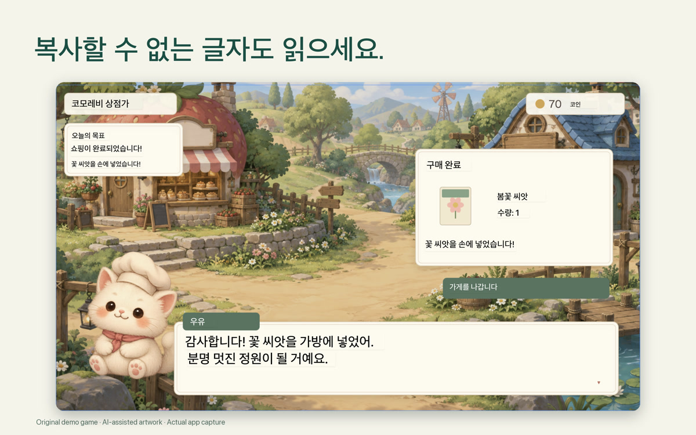
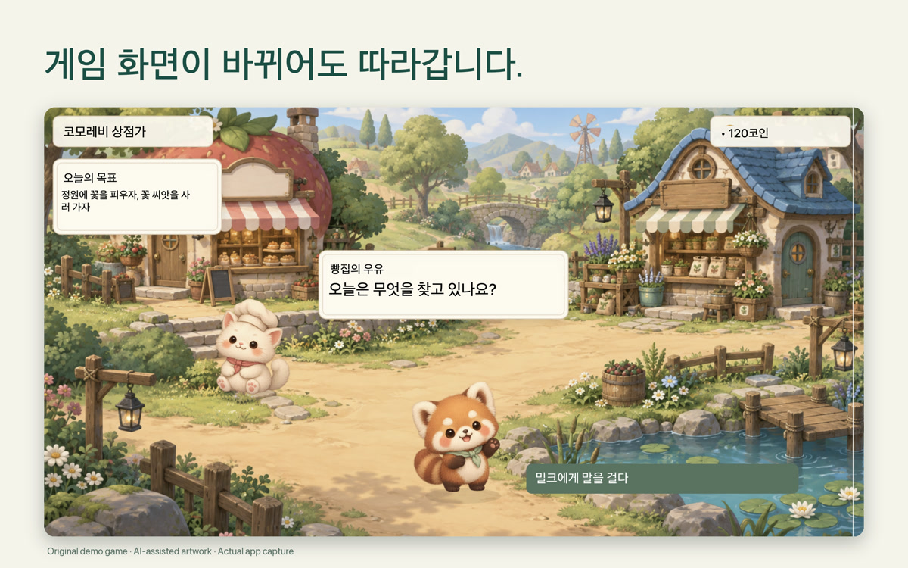

원래 화면에서 바로 읽기
게임 화면 위에서 번역된 대사를 읽어 보세요.
Mac 화면 번역
게임, 이미지, 문서 속 글자를 선택하세요. 보고 있던 자리에서 번역을 읽을 수 있습니다.
한 번 구매 · 구독 없음
App Store에서 해당 국가의 현재 가격을 확인하세요.
macOS 15+ · Apple silicon & Intel · 화면 기록 권한이 필요합니다. 언어팩 다운로드 후 오프라인으로 사용할 수 있습니다. 설정 및 호환성 안내
읽고 싶은 화면 글자 주위로 영역을 그립니다.
기존 창 위에 표시된 번역을 읽습니다.
게임이나 영상을 보면서 바뀌는 화면 글자를 번역합니다.

게임 화면 위에서 번역된 대사를 읽어 보세요.

대사와 화면 속 글자를 원래 위치에서 읽습니다.
계정 없이 기기에서 번역합니다. 언어팩을 한 번 내려받으면 오프라인에서도 사용할 수 있습니다.
ViewLingo는 음성이 아니라 화면에 보이는 글자를 번역합니다. 지원 언어 목록은 macOS에서 그대로 가져오며, 언어팩을 한 번 내려받으면 오프라인으로 번역할 수 있습니다.
Mac에서 하듯, 기사 위로 뷰파인더를 드래그해 보세요.
조작을 설명하는 예시입니다. 실제 번역 엔진은 실행되지 않습니다.
ViewLingo는 Mac의 Apple 문자 인식(OCR)과 번역이 함께 지원하는 언어를 제공합니다. 사용 가능한 언어는 macOS 버전에 따라 달라집니다.
필요한 언어팩은 ViewLingo가 한 번만 내려받도록 안내합니다(시스템 설정 › 일반 › 언어 및 지역 › 번역 언어에서도 관리할 수 있습니다). 이후에는 완전히 오프라인으로 번역합니다.
내 Mac에서 사용 가능한 정확한 목록은 ViewLingo 설정에서 확인할 수 있습니다. 앱이 macOS에서 직접 읽어옵니다.
fn + Control + Option을 누르고 게임, 영상, 웹사이트, 문서, 앱 등 화면 속 글자 위로 드래그하세요. 뷰파인더를 옮기거나 크기를 바꾸면 번역도 따라옵니다.
영상 자막, 게임, 슬라이드, 라이브 스트림처럼 바뀌는 글자를 따라가며 번역하고, 화면이 그대로일 때는 번역도 안정적으로 유지됩니다.
Mac의 문자 인식과 Apple 번역이 함께 지원하는 모든 언어를 제공합니다. macOS가 발전할수록 언어도 늘어납니다.
서버로 화면을 보내지 않습니다. 번역은 Mac에서 로컬로 처리됩니다.
번역이 원문의 레이아웃과 색에 맞춰 원문 위에 그대로 표시됩니다. 복사하거나 앱을 오갈 필요가 없습니다.
만화 칸부터 간판까지, 일본어·중국어·한국어 세로쓰기 글자를 인식해 번역합니다.
번역문이 원문보다 길어도 자동으로 폰트 크기를 조절하여 가독성을 유지합니다.
Live·다시 시도·닫기(✕) 버튼이 선택 영역 바깥에 있어 읽고 있는 글자를 가리지 않습니다.
여러분의 콘텐츠는 Mac을 떠나지 않습니다. 모든 번역은 Apple 기본 번역 엔진으로 기기 안에서 처리됩니다.
필요한 언어팩을 다운로드한 뒤에는 인터넷 연결 없이 Mac에서 번역합니다.
계정도, 분석도, 추적도 없습니다. 화면 내용과 번역은 저희에게 전송되지 않으며, 번역 기록은 내 Mac에만 남습니다.
기기 안에서 Apple 번역 엔진을 사용합니다. 지원 언어는 Mac 환경에 따라 다릅니다.
Mac App Store에서 다운로드할 수 있습니다.
게임, 이미지, 문서 속 글자를 선택하세요. 보고 있던 자리에서 번역을 읽을 수 있습니다.
App Store에서 해당 국가의 현재 가격을 확인하세요.
macOS 15 이상 · Apple silicon 및 Intel